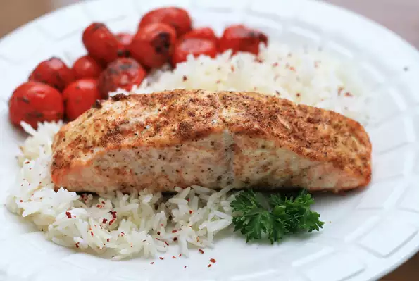

Baked Salmon

Ingredients (unordered)
- 1 serving cooking spray
- One 2 pound salmon fillet
- 2 tablespoons mayonnaise
- 2 tablespoons seafood seasing (such as Old Bay)
Steps (ordered)
Step: 1
- Preheat the oven to 350 degrees F (175 degrees C). Line a large baking sheet with aluminum foil and spray with cooking spray.
Step: 2
- Place salmon on the prepared baking sheet. Spread with mayonnaise and sprinkle with Old Bay® seasoning.
Step: 3
- Bake in preheated oven until fish flakes easily with a fork, about 20 minutes.
Odin Recipes